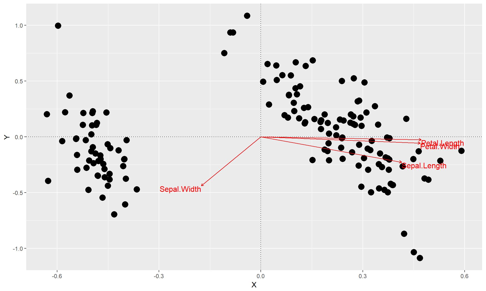
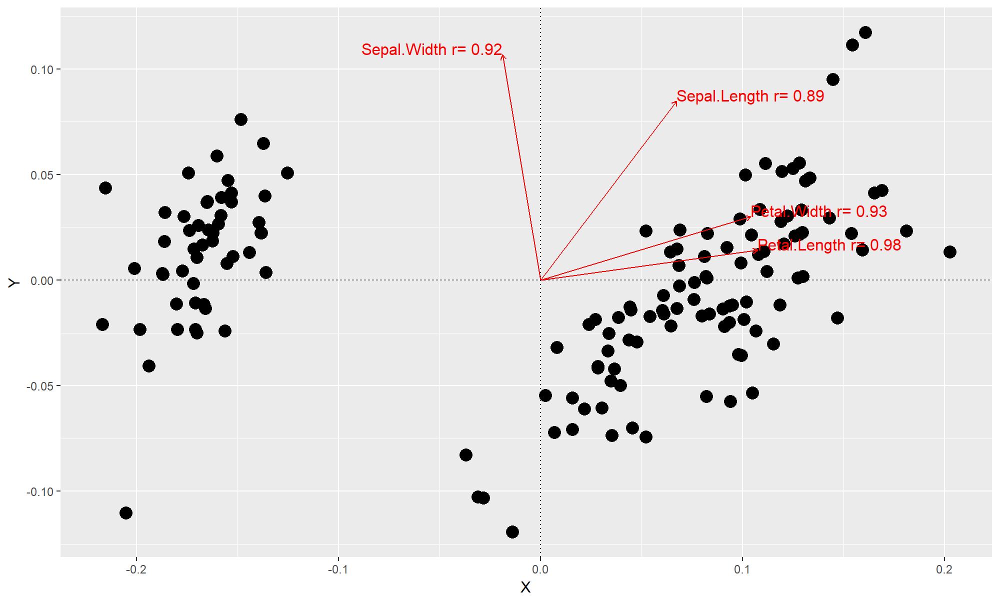

Redundancy analysis (RDA) calculates to show the amount of variation within a dataset attributed to a set of explanatory variables. Distance-based RDA (db-RDA) does the same thing, but with variation from a non-euclidean distance-based method (such as Bray-Curtis, Jaccard). It is important to note that RDA and db-RDA assumes a linear relationship between variation and an explanatory variable.
Here in this tutorial, I will show you two methods of performing db-RDA and generating PCoA Bi-plots in R using ggplots2.
Required libraries
First, we need to load the following packages. Install them if you do not have them.
library(vegan)
library(ggplot2)
Generating bi-plots with the capscale function
This first function generates a bi-plot using vegan's capscale function.
gg.capscale = function (table, by=NULL, dist="bray") {
# Set explanatory variables as those in table if 'by' is not specificed
if (is.null(by)) {
by=table
}
# Run db-RDA with capscale()
# We generate a formula dynamically from the colnames of 'by'
mod=capscale(as.formula(paste("table~", paste(colnames(by),collapse = "+"))), data=by, dist="bray")
summary = summary(mod)
# Run an ANOVA on the explanatory variables to identify the significant ones
anv = anova(mod, by="terms")
# Select which variables were significant
sig_var = which(sapply(X = rownames(summary$species), function (X) {
if (anv$`Pr(>F)`[which(rownames(anv) == X)] < 0.05) {
return(T)
}
return(F)
}))
# Extract points
points=data.frame(X=summary$sites[,1], Y=summary$sites[,2])
# Extract arrows that belong to significant explanatory variables
arrows = data.frame(Name = rownames(summary$species), X=summary$species[,1], Y=summary$species[,2])[sig_var,]
# Rescale arrows so that they fit within bounds of the data
arrows$Z = sqrt(arrows$X^2 + arrows$Y^2)
arrows$X = max(abs(points$X)) * arrows$X / arrows$Z * 0.75
arrows$Y = max(abs(points$X)) * arrows$Y / arrows$Z * 0.75
# First plot the points
pl = ggplot(points, aes(x=X, y=Y)) +
geom_point(size=4) +
geom_hline(yintercept=0, linetype="dotted") +
geom_vline(xintercept=0, linetype="dotted")
# Then plot the arrows
pl = pl +
geom_segment(data=arrows, aes(x=0, xend=X, y=0, yend=Y),color="red", arrow=arrow(length=unit(0.01,"npc"))) +
geom_text(data=arrows, aes(x=X, y=Y,label=Name, hjust=0.5*(1-sign(X)),vjust=0.5*(1-sign(Y))), color="red", size=4)
# Return the plot
return(pl)
}
Let's test this out with the iris data.
data(iris)
gg.capscale(iris[,1:4], by = iris[,1:5])

Generating bi-plots with the envfit function
The envfit function within vegan performs a similar function as capscale (however the exact difference I cannot confidently say). The main difference is that envfit will identify explanatory variables that are significantly correlated with variation within an ordination and attach correlation coefficient values to them.
gg.envfit = function (table, by=NULL, dist="bray", min_r=0.3) {
# Generate PCoA
pcoa = cmdscale(vegdist(table, dist=dist), eig = T, k=2)
points = data.frame(X=pcoa$points[,1], Y = pcoa$points[,2])
# Set explanatory variables as those within table if there are none
fit = if(is.null(by)) table else by
# Run envfit
efit = envfit(pcoa, fit)
# We not only filter out non-significant factors but also those with low correlation
sig_vars = intersect(which(efit$vectors$pvals <= 0.05), which(abs(efit$vectors$r) > min_r))
# Extract arrows, removing
arrows = data.frame(Label = paste(rownames(efit$vectors$arrows), "r=", round(abs(efit$vectors$r),2), sep=" "),
X = efit$vectors$arrows[,1],
Y = efit$vectors$arrows[,2],
r = abs(efit$vectors$r))[sig_vars]
arrows$Z = sqrt(arrows$X^2 + arrows$Y^2)
arrows$X = max(abs(points$X)) * arrows$X / arrows$Z * 0.5
arrows$Y = max(abs(points$X)) * arrows$Y / arrows$Z * 0.5
# Plot points
pl = ggplot(points, aes(X, Y)) + geom_point(size=4) +
geom_hline(yintercept=0, linetype="dotted") +
geom_vline(xintercept=0, linetype="dotted")
# Plot arrows
pl = pl +
geom_segment(data=arrows, mapping=aes(x=0, y=0, xend=X, yend=Y), color = "red", arrow=arrow(length=unit(0.01,"npc"))) +
geom_text(data=arrows, aes(x=X, y=Y,label=Label, hjust=0.5*(1-sign(X)),vjust=0.5*(1-sign(Y))), color="red", size=4)
return(pl)
}
gg.envfit(iris[,1:4])
